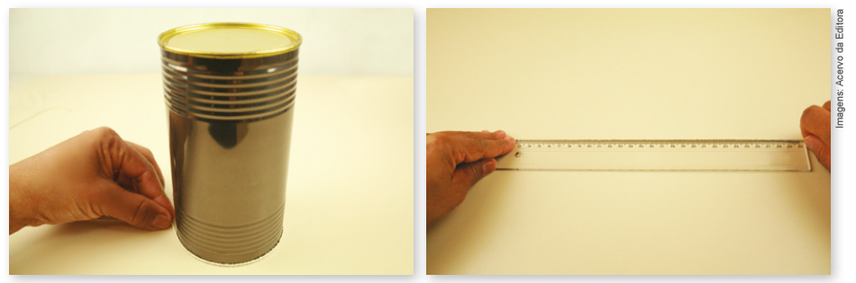
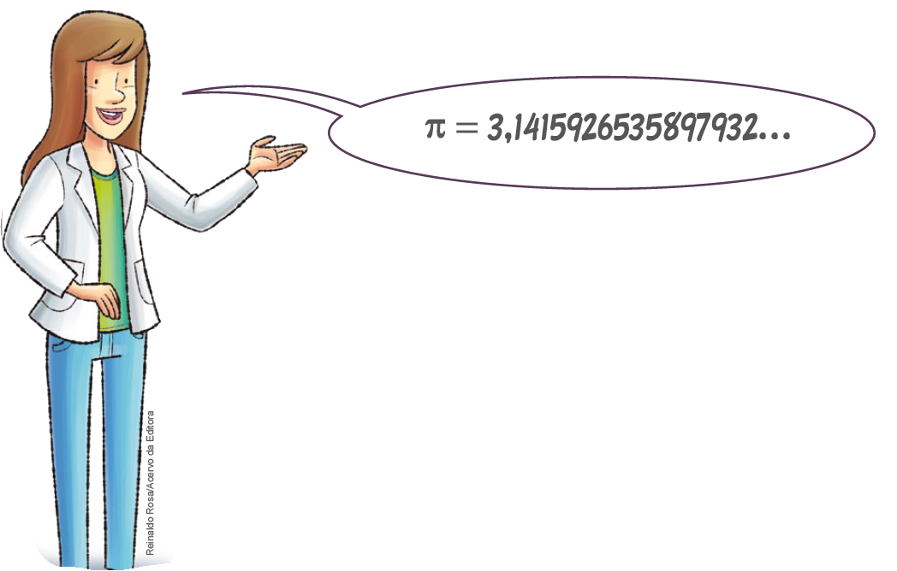
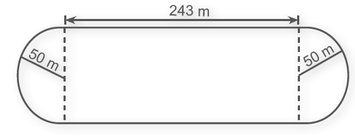
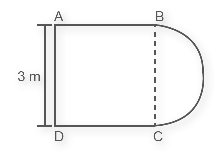
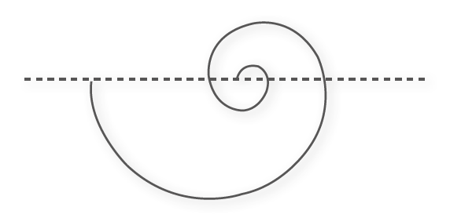

114
UNIDADE 4 - CAPÍTULO 2
Capítulo 2 - Comprimento da circunferência
Vamos conhecer agora como podemos calcular o comprimento de uma circunferência.
Observe a lata na imagem abaixo. Com um barbante podemos contornar a sua circunferência. Ao esticar o barbante, com o auxílio de uma régua, é possível saber a medida do seu comprimento.
Nem sempre é possível fazermos isto para calcular a medida do comprimento de uma circunferência. No entanto, descobriu-se uma relação que nos permite fazer este cálculo.
Ao dividirmos a medida do comprimento da circunferência pela medida do seu diâmetro, observou-se que sempre se obtém o mesmo número decimal com infinitas casas decimais não periódicas. Logo, este número não é um número racional. Ele é chamado de número irracional e é representado pela letra grega π (pi). Observe este número com as 16 primeiras casas decimais:
Embora o valor de π até 39 casas decimais seja o suficiente para calcular a medida do comprimento da circunferência do Universo, com uma precisão equivalente ao raio do átomo de hidrogênio, isso não evitou que cientistas, usando computadores, tentassem calcular com o maior número possível de casas decimais.
Assim podemos calcular a medida do comprimento de uma circunferência a partir da relação:
medida de comprimento / medida do diâmetro ou c/d = π
115
UNIDADE 4 - CAPÍTULO 2
Conhecendo esta relação podemos também dizer que C = d · π. Sabendo que a medida do diâmetro é igual a duas vezes a medida do raio, temos:
C = 2 · r · π
ou
C = 2 · π · r
Para realizar estes cálculos, geralmente usamos um valor aproximado de π igual a 3,14.
Acompanhe a situação a seguir.
A Singapore Flyer é uma das maiores rodas-gigantes do mundo. Localizada na cidade-estado de Cingapura, ela tem 150 metros de diâmetro. Quantos metros são percorridos em uma volta? A medida de uma volta na roda-gigante equivale à medida do comprimento de sua circunferência. Dessa forma:
► Vamos determinar inicialmente a medida do raio:
d = 2r
150 = 2r
r = 150/2 = 75 m
► A seguir calcularemos a medida aproximada do comprimento da circunferência (consideraremos π = 3,14):
C = 2 πr
C = 2 · 3,14 · 75
C = 471 m
Logo, em uma volta completa na Singapore Flyer, são percorridos aproximadamente 471 m.
116
UNIDADE 4 - CAPÍTULO 2
Encontre soluções
1. A medida do diâmetro de uma moeda de 1 real é igual a 27 mm. Calcule, em centímetros, a medida aproximada do comprimento da sua circunferência. (Considere π = 3,14).
2. Uma pista de atletismo é formada por dois semicírculos, cada um com raio igual a 50 m, e dois segmentos de reta paralelos, cada um medindo 243 m, conforme mostra a figura. Quanto mede aproximadamente o comprimento dessa pista? (Use π = 3,14.)
3. Os condôminos de um edifício resolveram construir um canteiro de flores ao redor de uma calçada que tem o seguinte formato:
Sabemos que as medidas dos segmentos AB BC CD e DA são iguais e que o contorno do canteiro que liga B a C é uma semicircunferência. Calcule quantos metros o contorno desse canteiro tem aproximadamente.
4. Temos o desenho de uma espiral formada por 4 semicircunferências cujos centros pertencem a uma mesma reta. A medida do diâmetro da semicircunferência menor é igual a 1 cm. Nas demais semicircunferências, a medida do diâmetro de cada uma é o dobro da medida do diâmetro da semicircunferência anterior. Determine a medida do comprimento aproximado dessa espiral, sendo π = 3,14.
